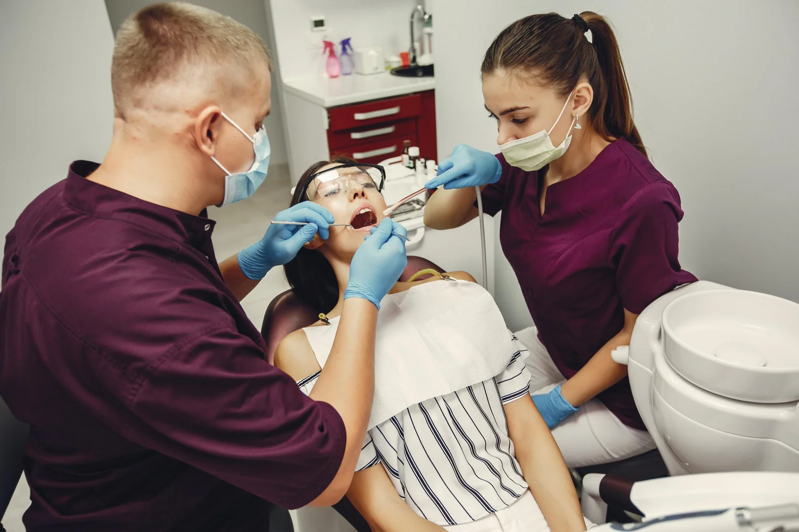
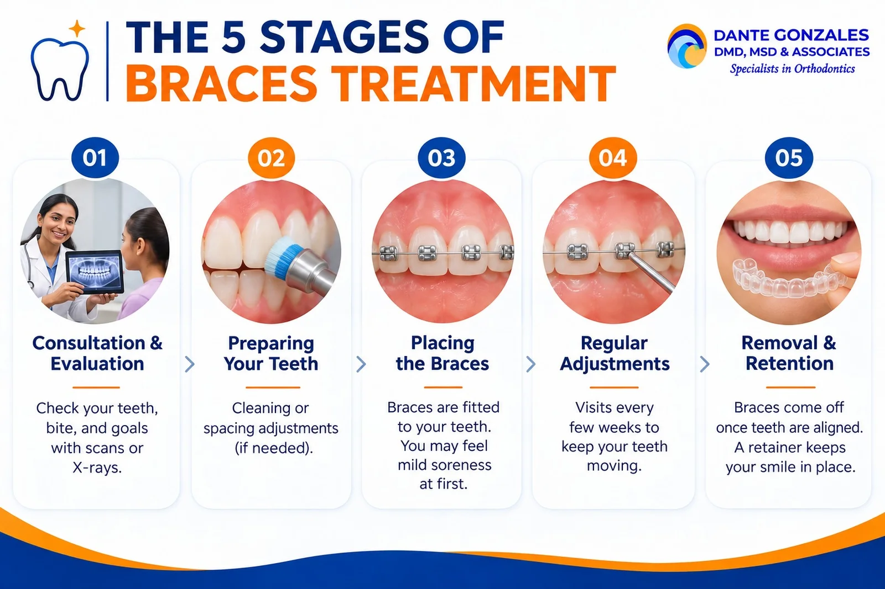

Many adults and children wonder whether their smile needs professional attention. The signs you need braces are not always obvious, and some show up as discomfort rather than crooked teeth.
This guide covers the most common signs of misaligned teeth, bite problems, and oral health risks. You will also learn what treatment options exist and what to expect from orthodontic care.
Common Signs You Need Braces
Common signs that indicate a need for braces include visible alignment issues and bite irregularities. A professional assessment is the only way to confirm what is happening.
Visibly Crooked or Crowded Teeth
Visible crooked or crowded teeth are the clearest sign of misalignment. If your upper front teeth overlap or twist, your teeth likely do not have enough space.
Crowded or overlapping teeth also make effective brushing and flossing difficult. Over time, that can affect your overall oral health.
Larger Gaps and Missing Teeth
Gaps between teeth can signal alignment issues. They can also affect bite stability and speech.
Missing teeth can allow neighboring teeth to drift. That drift often creates new bite issues and uneven spacing.
Misaligned Bite: Overbite, Underbite, Crossbite, and Open Bite
A misaligned bite means your top and bottom teeth do not fit together properly. Four patterns are most common.
An overbite occurs when upper teeth protrude over lower teeth. An underbite happens when lower teeth extend past upper teeth.
A crossbite occurs when upper teeth sit inside lower teeth. An open bite happens when front teeth do not touch at all.
Orthodontists evaluate both aesthetic alignment and functional bite mechanics. That is why a bite problem can exist even when your teeth look fairly straight.
Functional Signs: Chewing, Speech, and Jaw Discomfort
Not every sign is visible in the mirror. Some are things you feel every day.
Difficulty Chewing or Biting
Difficulty chewing can be a sign of misalignment. You may avoid certain foods or find that certain teeth never seem to meet.
Difficulty biting into foods like apples or sandwiches often points to an open bite or another bite issue.
Jaw Pain, Clicking, and TMJ Issues
Jaw pain or clicking may signal issues with bite alignment or TMJ. Persistent jaw discomfort may indicate a misaligned bite.
Frequent headaches can also stem from misaligned teeth. If you wake up with a sore jaw, it is worth asking about an orthodontic evaluation.
Speech Issues and Mouth Breathing
Speech problems, such as trouble pronouncing certain words, can come from gaps or an open bite. Teeth that do not fit well change how your tongue moves.
Mouth breathing can also relate to jaw development and bite issues. Your orthodontist can help you understand the connection.
Uneven Tooth Wear and Frequently Biting Your Cheeks
Uneven tooth wear suggests your bite is putting pressure on certain teeth more than others. Frequently biting your cheeks or tongue is another warning sign.
Signs Children May Need Orthodontic Care
Early signs often appear while a child still has baby teeth. Catching them early gives families more choices.
Early or Late Loss of Baby Teeth
Early or late loss of baby teeth can disrupt how adult teeth come in. Teeth may erupt crowded, blocked, or out of position.
Thumb-Sucking and Jaw Development
Prolonged thumb-sucking can push front teeth forward. It can also affect jaw development and create an open bite.
When to Get an Orthodontic Evaluation
Early evaluation helps detect problems before they worsen. The American Association of Orthodontists (AAO) recommends a first orthodontic evaluation by age 7.
Early intervention can reduce the severity of malocclusions. It can also lead to shorter treatment times and simplify treatment options later.
Oral Health Risks of Misaligned Teeth
Crooked teeth are not only a cosmetic concern. They can make it harder to keep your mouth clean.
Tight spaces trap food and plaque, which raises the risk of tooth decay and gum disease. Good oral hygiene becomes harder when teeth overlap.
Bad breath can also result from plaque trapped between crowded teeth. Straighter teeth are easier to clean and support better oral health.
Emotional Signs: Feeling Self-Conscious About Your Smile
Misaligned teeth can lead to low self-confidence in adults. Excessive gaps between teeth can affect how someone feels about their smile.
Hiding your smile in photos is a common sign of emotional distress from misalignment. Many adults carry this feeling for years.
Orthodontic treatment can enhance both appearance and emotional well-being. Patients report improved self-esteem after treatment, and it can make a big difference.
Treatment Options: Braces and Clear Aligners

There are multiple options for correct alignment today. The right choice depends on your bite, your age, and your goals.
Traditional Metal Braces
Traditional metal braces use brackets and wires to move teeth steadily. They handle complex cases well and remain a reliable choice for teens and adults.
Clear Braces and Clear Aligners
Clear braces blend with your teeth, while clear aligners are removable trays. Digital scans help plan each step and show how your teeth will move.
Some cases also use rubber bands to correct the bite. Your orthodontist will explain which orthodontic options fit your case.
What Are the 5 Stages of Braces?
Understanding the process makes treatment less intimidating. Most patients move through these five stages.

Stage 1: Consultation and Orthodontic Evaluation
Your orthodontist reviews your teeth, bite, and goals. Digital scans or X-rays may be used to build a personalized care plan.
Stage 2: Preparing Your Teeth
Some patients need cleaning or spacing adjustments first. In certain cases, enough space must be created before braces go on.
Stage 3: Placing the Braces
Braces are fitted to your teeth. You may feel mild soreness at first as you begin to wear braces.
Stage 4: Regular Adjustments
Visits every few weeks keep your teeth moving on schedule. This is the longest stage of treatment.
Stage 5: Removal and Retention
Once teeth reach their new position, braces come off. A retainer then protects your straighter smile.
Is $6,000 Too Much for Braces?
Braces costs vary by case, location, and treatment type. A total near $6,000 can fall within the range some practices charge for complex or longer treatment.
Ask what the fee includes, such as retainers, adjustment visits, and payment plans. A clear estimate after your evaluation is the best way to judge value.
What Disqualifies You From Braces?
Very few conditions rule out braces entirely. Untreated gum disease or active tooth decay usually needs to be handled first.
Once your oral health is stable, most children and adults are good candidates. An orthodontist can confirm this during your evaluation.
What Are the Signs That I Need Braces? Next Steps
If you notice crooked teeth, bite issues, jaw pain, or speech problems, schedule an orthodontic evaluation. Early signs are easier to address than long-standing problems.
Contact Dr. Dante Gonzales to explore treatment options and take the first step toward a straighter smile.
Ready to start your smile journey?
Book a complimentary consultation with Dr. Dante Gonzales in Dublin or Tracy, CA. We will review your case and map out a clear, personalised treatment plan.
Request ConsultationQuestions about your orthodontic care? Meet Dr. Dante A. Gonzales, DMD, MSD and our orthodontists, or contact our Dublin or Tracy team for an individual assessment.
This article is for general education and is not a substitute for a professional orthodontic evaluation. Treatment recommendations and outcomes vary from person to person.